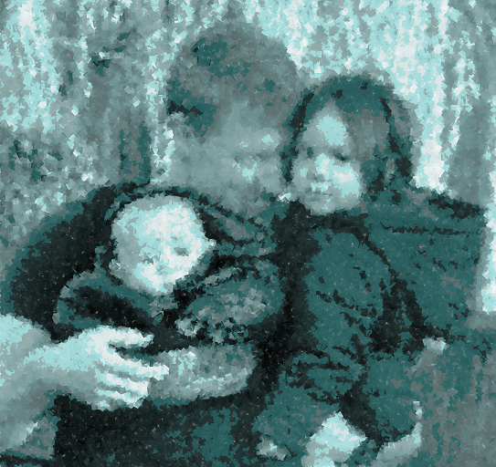

30 December 2023
Activities
Travelling across East Anglia to pick up a rucksack from storage since I lost my house 3 years ago in the court proceedings. I love camping, so wanted to do the appropriate Scout thing and 'Be Prepared'! Camo green though... It's been 2.5 years since I have been in the Army.
I took another look at my neuroscience to computer science convertion documentation. I need to explain some of the notation I have used in my algorithm. Then this evening I find there is a new piece of hardware that better represents a synapse than the memristor... this could be very exciting! However, quantum machine learning, climate solutions and personalised healthcare are the way forwards. Space is something I dream of, I mean, imagine being in Star Trek!
Court Updates
I have submitted an application to the United Nations Human Rights Council. I have not seen my children for 3 Christmas' now. Not even had a phone call... This is an absurd injustice for any child.
I have updated a court document that I am looking to submit to the Supreme Court.
Background
Activities
A lot of my time since June 2019 has been spent focused on Court hearing and learning about family law. I have attempted to complete my PhD, but have been unable to deal with the disruption of my family and seeing my children suffer, for example, my 2 year old daughter collapsing to the floor in stress being unable to speak or move for 20 minutes. It was more than I could deal with and function properly. I found the only thing I could do and function effectively was when working on court activities. I did consider a career in family law for a while...
I was 6 months away from finishing my PhD, I completed most of a PGCE, and then spent 6 months full time learning about family law and trying to finish my PhD.
I started work again but I was a little broken for a while. I had a pretty awful experience for a time, with my children and I not being allowed to see each other, and I figured my ex partner was having several relationships, while denying this to the court. Weird when your daughter asks her mum 'Do you llke this daddy?' (while pointing to me). Erm... so you are not lying to the court again are you Jan? How many times have you committed perjury now? It was actually in every single hearing we had that I recall her lying to the court until she got representation.
What I find odd, is how a mother can bite their own child to make them cry, lie to the court so blatently, and stil be awarded care of a child they didn't even like looking after. Ah yes, is this the point at which we say, the system goes in the mothers favour? Well, time to shake up said system - because it is now 2023, not 1800.
Court Updates
I've not seen my children since October 2020. The first sentence I heard my daughter say was, 'Daddy, I want to see you more, I want to play with you more, I want to cook with you more (pointing at the oven), I want to run with you more'. This should not be the first sentence someone hears their child say. This should not be followed up with death threats suggesting if you say or do certain things, you and/or your children will die. To be honest, this was a small problem in comparison to the others. I gather false documentation of marriage have been submitted in order to gain funds, but then again, I've not been legally permitted to speak to the mother of my children to find out what's going on.
